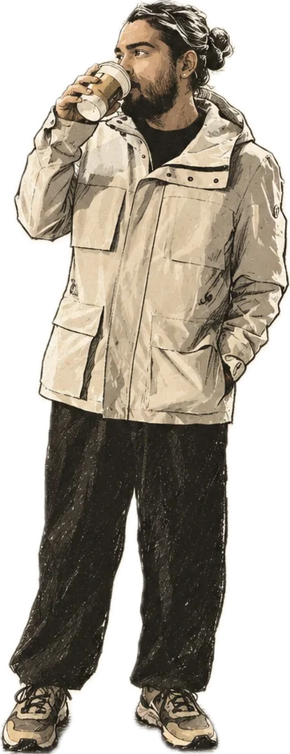

Geneva3 poursArguments
The Doctor and the Barrister
Che Guevara and Gandhi sit next to each other on my bookshelf as a joke. Over the years the joke has turned into an argument, and the argument has turned out to be useful.
Arguments
Between the second coffee and the first drink: essays in the wrong order, notes, arguments, and whatever I overheard on the way.
most recently poured
Geneva3 poursArguments
Che Guevara and Gandhi sit next to each other on my bookshelf as a joke. Over the years the joke has turned into an argument, and the argument has turned out to be useful.
Arguments
Geneva10 poursOverheard
On an Indian overnight train, strangers will eventually ask the question every young Indian is asked. Behind it are two thousand years of law and scripture, a colonial courtroom, a republic's promises, Bollywood, the internet and a very large amount of family. A long look at how India chooses who marries whom, what each way gets right, and what it costs.
Overheard
Geneva9 poursExplained
A young writer is sentenced to death and pardoned at the last moment, by an order signed the day before. He spends the rest of his life writing about murderers, holy fools, and the best argument against God anyone has ever made. He believed in God anyway. This essay tries to work out how.
Explained
New York6 poursArguments
A prisoner's short essay and a politician's long book both begin with the same three words. One answers them with God, the other without, and reading them together is the most useful argument about religion I have had with anyone.
Arguments
Geneva8 poursArguments
India asks almost a billion people once every five years. America asks too, then passes the answer through states, districts and electors that its founders built to check the majority. Switzerland asks its citizens four times a year while a quarter of the country looks on. On India's Independence Day, a look at why each system is shaped the way it is, what it needs to work, and who it has always left out.
Arguments
Geneva6 poursExplained
Britain voted him the greatest Briton who ever lived. In Bengal, Nairobi and Cork he is remembered differently. Both memories are accurate. This essay tries to explain how that can be true.
Explained